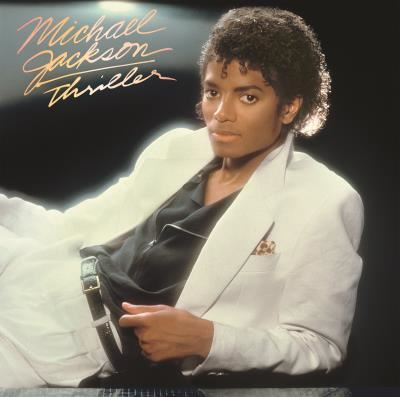

Micheal Jackson-Thriller
Sorti en 1982, les neuf titres de l'album sont de réels tubes planétaires ! Coproduit par Quincy Jones il est à la fois pop, rock, soul un meadley incroyable ! De la dance du hit inoubliable Thriller, en passant Beat Hit, Human Nature ou encore Billie Jean, cet opus est simplement une perle du roi de la pop Michael Jackson. C'est aussi lors des représentations scéniques pour cet opus que Michael Jackson dévoile pour la première fois son Moonwalk sur Billie Jean et son clip mythique de zombie Thriller qui devient le phénomène clip vidéo de l'époque et influence tous les autres artistes.
Pink Floyd-The Dark Side of The Moon
The Dark Side Of The Moon de Pink Floyd est le troisième album le plus vendu de tous les temps ce qui mit en lumière le groupe undeground anglais. Un opus devenu culte notamment grâce à son titre Money qui est juste parfait dans sa simplicité, sa musicalité guitare, voix et synthé. L'album lance le groupe à l'international et trônera même dans le top des ventes aux Etats-Unis.
The Beatles-Abbey Road
On ne pouvait pas faire ce classement sans placer Abbey Road des Beatles. Phénomène de la pop rock anglaise sorti en 1969, il est devenu iconnique. Au bord de leur séparation, le groupe nous offre un dernier album à la hauteur de leur grandeur, encore en tête du hit parade en 2019 après une rééditiion inédite. Alors Come Together et écoutons cet opus !